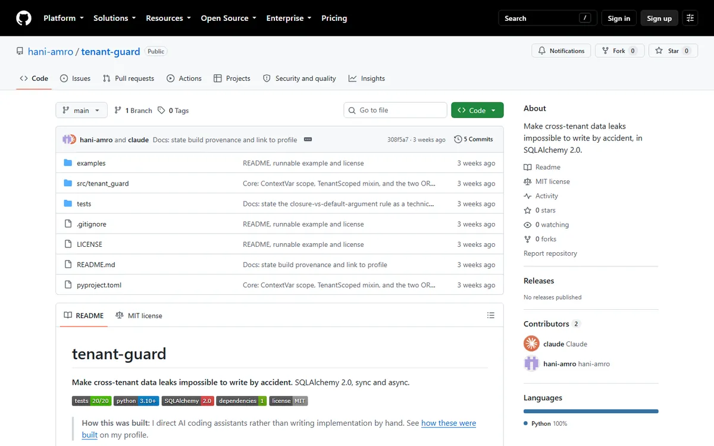
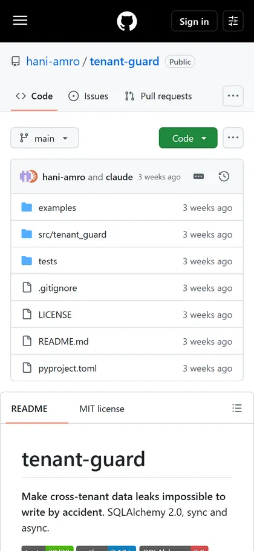
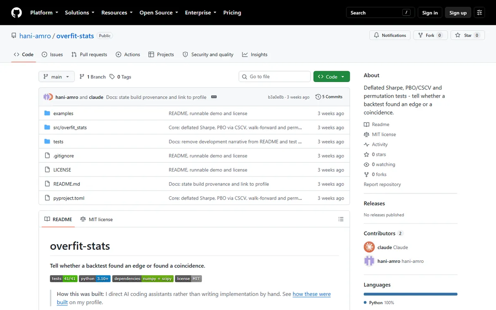
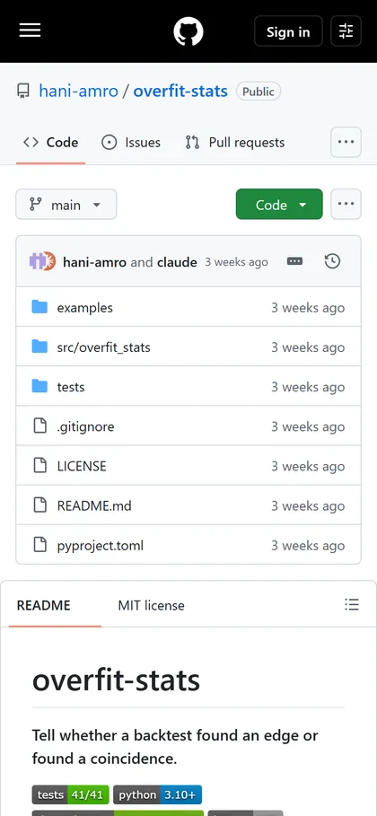

The scale, before any claim
Zero users · zero downloads · not on PyPI (the PyPI JSON API returns 404 for both names) · five commits each, all landed on 2026-08-16 inside one hour, with no commit in the 19 days since · no CI. These are code samples, not products, and nobody uses them today.
- The problem
- The defect lives in `src/tenant_guard/guard.py` at line 91: the lambda handed to `with_loader_criteria` that injects a `tenant_id` predicate into every query, including the lazy relationship loads whose SQL is never written down anywhere. SQLAlchemy compiles that lambda through its lambda cache, which keys on the code object and tracks *closure* variables to re-bind them per call — but it is blind to parameter default values. So writing `lambda cls, _tid=tenant_id: cls.tenant_id == _tid`, the common formulation against late binding in Python, bakes the first tenant into the cached criteria and applies it to every tenant afterwards. I reproduced this in a standalone script on SQLAlchemy 2.0.51: the default-argument form let the second tenant read the first tenant's rows (`default_arg tenant1 sees [1, 1] tenant2 sees [1, 1] -> LEAK`), while the closure form isolated correctly (`closure tenant1 sees [1, 1] tenant2 sees [2, 2] -> ok`) — no exception, no warning, and two rows returned either way, a perfectly plausible count. That is exactly a customer-to-customer data leak nobody notices. The harder part was not diagnosing the cause but designing a test that exposes it: a test asserting "each tenant sees some rows" passes while the bug is live, so `tests/test_read_scoping.py` line 46 asserts `a_ids.isdisjoint(b_ids)` — full disjointness of the id sets — preceded at line 13 by `test_ground_truth_has_both_tenants`, a ground-truth assertion that all four rows really exist, without which every isolation test would pass against an empty database. The fix is one line; the comment explaining why it must never be rewritten runs seven lines (84-90), longer than the fix. The same principle drives overfit-stats: eight guard sites across `pbo.py`, `sharpe.py` and `validation.py` return NaN outright when the input cannot support a conclusion, rather than a falsely reassuring number.
- What it proves
- Two public MIT repositories — a code sample a hiring manager can open and read end to end: 435 source lines against 386 test lines in tenant-guard, 457 against 314 in overfit-stats. What they prove is not volume but the class of defect he hunts: one that throws no exception, drops no row, and survives code review — visible only to someone who designed a test on the assumption it exists. And each README carries a Limitations section stating where the library can be bypassed, before anyone has to ask.
The mechanism
The defect happens first, then the mechanism that makes it impossible.
How to read it SQLAlchemy's lambda cache tracks closure variables only; a default-argument tenant_id goes unseen, so the first tenant's value is cached and tenant 2 reads tenant 1's rows with no error. The closure form, one line away, is rebound per call: the leak stops there. Last step: `len(rows) > 0` passes on leaked data, so the test asserts disjoint id sets.
Screens
Captured 2026-09-05 from the addresses shown beneath them, exactly as served — nothing staged.




$ cd publish/tenant-guard && python -m pytest -q ; cd ../overfit-stats && python -m pytest -q
$ cd publish/tenant-guard && python -m pytest -q
.................... [100%]
20 passed in 0.95s
$ cd ../overfit-stats && python -m pytest -q
......................................... [100%]
41 passed in 85.93s (0:01:25)The code, verbatim
def _scope_reads(execute_state) -> None:
"""Inject ``tenant_id = :current`` into every scoped SELECT."""
if not execute_state.is_select or execute_state.is_column_load:
return
tenant_id = execute_state.session.info.get(SCOPE_KEY)
if tenant_id is None:
# An unscoped session. Deliberate, and only reachable through
# `unscoped_session(reason=...)`, which logs why.
return
for base in _REGISTERED:
execute_state.statement = execute_state.statement.options(
with_loader_criteria(
base,
# `tenant_id` MUST be a closure variable, not a default argument.
# with_loader_criteria compiles this lambda through SQLAlchemy's
# lambda cache, which keys on the lambda's code object and tracks
# *closure* variables to re-bind them per call. A default argument
# is invisible to that tracking, so the first tenant seen would be
# baked into the cached criteria and silently applied to every
# later tenant -- the exact leak this library exists to prevent.
lambda cls: cls.tenant_id == tenant_id,
include_aliases=True,
)
)
Copied verbatim from the repository; nothing elided.
Every number, and the command that produced it
-
20/20
tenant-guard tests passing — a live run, not a badge
Source
cd GIT-cv/publish/tenant-guard && python -m pytest -q → "20 passed in 1.88s" (تشغيل 2026-09-04) -
41/41
overfit-stats tests passing — a live run
Source
cd GIT-cv/publish/overfit-stats && python -m pytest -q → "41 passed in 177.67s (0:02:57)" (تشغيل 2026-09-04؛ المدة تختلف حسب الجهاز) -
0.89
test-lines to source-lines ratio in tenant-guard (386 ÷ 435)
Source
wc -l src/tenant_guard/*.py → 435 total ؛ wc -l tests/*.py → 386 total -
1
tenant-guard's runtime dependencies: SQLAlchemy alone
Source
tenant-guard/pyproject.toml سطر 25 → dependencies = ["SQLAlchemy>=2.0,<3.0"] (overfit-stats سطر 25: numpy>=1.24, scipy>=1.10) -
0
releases published to PyPI for either library
Source
urllib.request على https://pypi.org/pypi/tenant-guard/json و https://pypi.org/pypi/overfit-stats/json → HTTP 404 لكليهما -
0
CI workflows in either repo — the badges are hand-written static images
Source
ls -a tenant-guard overfit-stats → لا مجلد .github في أي منهما ؛ الشارات روابط img.shields.io ثابتة (tenant-guard السطور 5-9، overfit-stats السطور 5-8)
What it does not do
- Neither is published to PyPI. tenant-guard's README prints `pip install tenant-guard` in its install instructions and admits on that same line (171) that it is "not yet on PyPI" — so the command does not work as written; source install only. overfit-stats' README does not mention PyPI at all.
- There is no CI in either repository and no `.github/workflows` directory. The badges are hand-written static shields.io images (tenant-guard lines 5-9, overfit-stats lines 5-8), so the "20/20" on them is a claim rather than a build output — the numbers shown here come from an actual run instead.
- tenant-guard is an application-level layer, not a database one: it is bypassed by a raw `text()` query, a direct psycopg cursor, or bulk update/delete statements that never reach `before_flush`. It complements PostgreSQL Row-Level Security rather than replacing it, and the README's Limitations section (line 151) says so verbatim.
- Neither library is benchmarked, and neither is compared numerically against reference implementations. "What does injecting the predicate into every query cost?" has no numeric answer yet, and both READMEs concede it (tenant-guard line 163, overfit-stats line 165).
Stack
- Python 3.10+ (requires-python = ">=3.10" في كلا الـ pyproject)
- SQLAlchemy 2.0 — do_orm_execute, before_flush, with_loader_criteria, ContextVar
- numpy + scipy
- pytest + pytest-asyncio + aiosqlite
- hatchling + pyproject.toml
- MIT License
Read tenant-guard Read overfit-stats
No running service: these are libraries, not products.